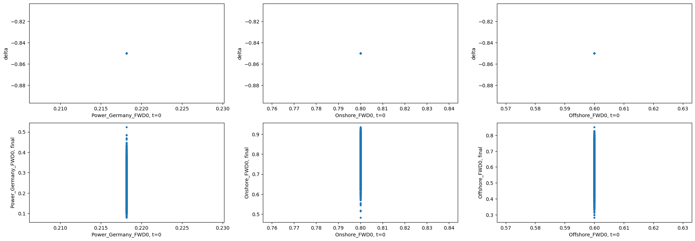

Green PPA Hedging
[25]:
import datetime as dt
import sys
sys.path.insert(0,'../../../..')
from typing import List
import numpy as np
import matplotlib.pyplot as plt
from rivapy.tools.datetime_grid import DateTimeGrid
from rivapy.models.residual_demand_fwd_model import WindPowerForecastModel, MultiRegionWindForecastModel, LinearDemandForwardModel
from rivapy.instruments import GreenPPASpecification
from rivapy.pricing.green_ppa_pricing import GreenPPADeepHedgingPricer
%load_ext autoreload
%autoreload 2
%matplotlib inline
The autoreload extension is already loaded. To reload it, use:
%reload_ext autoreload
Setup Model for Wind and Power Prices
[58]:
# setup
wind_region_model = {}
vols = [1.0,3.0,6.0]
mean_reversion_speed = [0.5,2.0,6.0]
capacities = [10_000.0, 120_000.0, 75_000.0]
rnd_weights = [ [0.8,0.2],
[0.8,0.2],
[0.8,0.2]
]
np.random.seed(42)
regions = []
for i in range(len(vols)):
model = WindPowerForecastModel(region='Region_' + str(i),
speed_of_mean_reversion=mean_reversion_speed[i],
volatility=vols[i])
regions.append(MultiRegionWindForecastModel.Region(
model,
capacity=capacities[i],
rnd_weights=rnd_weights[i]
) )
wind = MultiRegionWindForecastModel('Wind_Germany', regions)
[63]:
?MultiRegionWindForecastModel
After setting up three regions we just simulate the weather forecast over the next ten days for the following four hours.
[10]:
wind_onshore = WindPowerForecastModel(region='Onshore', speed_of_mean_reversion=0.1, volatility=4.80)
wind_offshore = WindPowerForecastModel(region='Offshore', speed_of_mean_reversion=0.5, volatility=4.80)
regions = [ MultiRegionWindForecastModel.Region(
wind_onshore,
capacity=1000.0,
rnd_weights=[0.8,0.2]
),
MultiRegionWindForecastModel.Region(
wind_offshore,
capacity=100.0,
rnd_weights=[0.2,0.8]
)
]
wind = MultiRegionWindForecastModel('Wind_Germany', regions)
model = LinearDemandForwardModel(wind_power_forecast=wind,
x_mean_reversion_speed= 0.1,
x_volatility=10.5,
power_name= 'Power_Germany')
Setup Green PPA Specification
[14]:
val_date = dt.datetime(2023,1,1)
strike = 0.3 #0.22
# For illustration purposes the schedule contains just one timepoint
spec = GreenPPASpecification(udl='Power_Germany',
technology = 'Wind',
location = 'Onshore', # must be the same as the region in the wind model
schedule = [val_date + dt.timedelta(days=3)],
fixed_price=strike,
max_capacity = 1.0)
PPA Hedging
[35]:
results = {}
#with open('hedge_results.json','r') as f:
# results = json.load(f)
from rivapy.tools.interfaces import FactoryObject
def compute_pnl_figures(pricing_results):
pnl = pricing_results.hedge_model.compute_pnl(pricing_results.paths, pricing_results.payoff)
return {'mean': pnl.mean, 'var': pnl.var, '1%':np.percentile(pnl,1.0),
'99%': np.percentile(pnl,99.0),}
def run_hedge_experiment(val_date, ppa_spec, model, **kwargs):
params = {}
params['ppa_spec'] = ppa_spec.to_dict()
params['ppa_spec_hash'] = ppa_spec.hash()
params['model'] = model.to_dict()
params['model_hash'] = model.hash()
params['pricing_param'] = kwargs
hash_key = FactoryObject.hash_for_dict(params)
#if hash_key in results:
pricing_result = GreenPPADeepHedgingPricer.price(val_date,
ppa_spec,
model,**kwargs)
#pricing_results.hedge_model.save('depp')
# model = DeepHedgeModel.load('depp')
return pricing_result
[48]:
pricing_results = run_hedge_experiment(val_date,
spec,
model,
initial_forecasts={'Onshore': [0.8],
'Offshore': [0.6]},
forecast_hours=[10, 14, 18],
power_fwd_prices=[1.0],
additional_states=['Offshore'],
depth=3, nb_neurons=32, n_sims=10_000,
regularization=100.0,
epochs=200, verbose=1,
tensorboard_logdir = 'logs/' + dt.datetime.now().strftime("%Y%m%dT%H%M%S"),
initial_lr=5e-4,
decay_steps=8_000,
batch_size=100,
decay_rate=0.8,
seed=42)
Epoch 1/200
100/100 [==============================] - 17s 9ms/step - loss: -56.0748
Epoch 2/200
100/100 [==============================] - 1s 10ms/step - loss: -57.1345
Epoch 3/200
100/100 [==============================] - 1s 10ms/step - loss: -57.2935
Epoch 4/200
100/100 [==============================] - 1s 10ms/step - loss: -57.3058
Epoch 5/200
100/100 [==============================] - 1s 10ms/step - loss: -57.4609
Epoch 6/200
100/100 [==============================] - 1s 10ms/step - loss: -57.2791
Epoch 7/200
100/100 [==============================] - 1s 10ms/step - loss: -57.5345
Epoch 8/200
100/100 [==============================] - 1s 10ms/step - loss: -57.5680
Epoch 9/200
100/100 [==============================] - 1s 10ms/step - loss: -57.5070
Epoch 10/200
100/100 [==============================] - 1s 11ms/step - loss: -57.6425
Epoch 11/200
100/100 [==============================] - 1s 10ms/step - loss: -57.7022
Epoch 12/200
100/100 [==============================] - 1s 11ms/step - loss: -57.6431
Epoch 13/200
100/100 [==============================] - 1s 11ms/step - loss: -57.8447
Epoch 14/200
100/100 [==============================] - 1s 11ms/step - loss: -57.8181
Epoch 15/200
100/100 [==============================] - 1s 10ms/step - loss: -58.0594
Epoch 16/200
100/100 [==============================] - 1s 11ms/step - loss: -57.7443
Epoch 17/200
100/100 [==============================] - 1s 11ms/step - loss: -57.8472
Epoch 18/200
100/100 [==============================] - 1s 11ms/step - loss: -57.7625
Epoch 19/200
100/100 [==============================] - 1s 11ms/step - loss: -57.6200
Epoch 20/200
100/100 [==============================] - 1s 10ms/step - loss: -58.0329
Epoch 21/200
100/100 [==============================] - 1s 8ms/step - loss: -58.0984
Epoch 22/200
100/100 [==============================] - 1s 8ms/step - loss: -58.1440
Epoch 23/200
100/100 [==============================] - 1s 9ms/step - loss: -58.0437
Epoch 24/200
100/100 [==============================] - 1s 9ms/step - loss: -58.1623
Epoch 25/200
100/100 [==============================] - 1s 8ms/step - loss: -58.1652
Epoch 26/200
100/100 [==============================] - 1s 9ms/step - loss: -58.1461
Epoch 27/200
100/100 [==============================] - 1s 9ms/step - loss: -58.0795
Epoch 28/200
100/100 [==============================] - 1s 9ms/step - loss: -58.1315
Epoch 29/200
100/100 [==============================] - 1s 8ms/step - loss: -58.4154
Epoch 30/200
100/100 [==============================] - 1s 9ms/step - loss: -58.0741
Epoch 31/200
100/100 [==============================] - 1s 8ms/step - loss: -58.4873
Epoch 32/200
100/100 [==============================] - 1s 9ms/step - loss: -58.0742
Epoch 33/200
100/100 [==============================] - 1s 9ms/step - loss: -58.1776
Epoch 34/200
100/100 [==============================] - 1s 10ms/step - loss: -58.3237
Epoch 35/200
100/100 [==============================] - 1s 11ms/step - loss: -58.4545
Epoch 36/200
100/100 [==============================] - 1s 10ms/step - loss: -58.1950
Epoch 37/200
100/100 [==============================] - 1s 8ms/step - loss: -58.5764
Epoch 38/200
100/100 [==============================] - 1s 8ms/step - loss: -58.5523
Epoch 39/200
100/100 [==============================] - 1s 8ms/step - loss: -58.5614
Epoch 40/200
100/100 [==============================] - 1s 8ms/step - loss: -58.4321
Epoch 41/200
100/100 [==============================] - 1s 8ms/step - loss: -58.5292
Epoch 42/200
100/100 [==============================] - 1s 8ms/step - loss: -58.1725
Epoch 43/200
100/100 [==============================] - 1s 9ms/step - loss: -58.3911
Epoch 44/200
100/100 [==============================] - 1s 10ms/step - loss: -58.4417
Epoch 45/200
100/100 [==============================] - 1s 11ms/step - loss: -58.3296
Epoch 46/200
100/100 [==============================] - 1s 11ms/step - loss: -58.5636
Epoch 47/200
100/100 [==============================] - 1s 10ms/step - loss: -58.6052
Epoch 48/200
100/100 [==============================] - 1s 10ms/step - loss: -58.7038
Epoch 49/200
100/100 [==============================] - 1s 8ms/step - loss: -58.0396
Epoch 50/200
100/100 [==============================] - 1s 8ms/step - loss: -58.6065
Epoch 51/200
100/100 [==============================] - 1s 8ms/step - loss: -58.4872
Epoch 52/200
100/100 [==============================] - 1s 8ms/step - loss: -58.7104
Epoch 53/200
100/100 [==============================] - 1s 9ms/step - loss: -58.5281
Epoch 54/200
100/100 [==============================] - 1s 9ms/step - loss: -58.5578
Epoch 55/200
100/100 [==============================] - 1s 9ms/step - loss: -58.7209
Epoch 56/200
100/100 [==============================] - 1s 9ms/step - loss: -58.6060
Epoch 57/200
100/100 [==============================] - 1s 9ms/step - loss: -58.8431
Epoch 58/200
100/100 [==============================] - 1s 9ms/step - loss: -58.5013
Epoch 59/200
100/100 [==============================] - 1s 10ms/step - loss: -58.6965
Epoch 60/200
100/100 [==============================] - 1s 10ms/step - loss: -58.5682
Epoch 61/200
100/100 [==============================] - 1s 10ms/step - loss: -58.8205
Epoch 62/200
100/100 [==============================] - 1s 11ms/step - loss: -58.6114
Epoch 63/200
100/100 [==============================] - 1s 10ms/step - loss: -58.7481
Epoch 64/200
100/100 [==============================] - 1s 10ms/step - loss: -58.6208
Epoch 65/200
100/100 [==============================] - 1s 10ms/step - loss: -58.7421
Epoch 66/200
100/100 [==============================] - 1s 10ms/step - loss: -58.8608
Epoch 67/200
100/100 [==============================] - 1s 10ms/step - loss: -58.6763
Epoch 68/200
100/100 [==============================] - 1s 10ms/step - loss: -58.6972
Epoch 69/200
100/100 [==============================] - 1s 9ms/step - loss: -58.7149
Epoch 70/200
100/100 [==============================] - 1s 10ms/step - loss: -58.8701
Epoch 71/200
100/100 [==============================] - 1s 10ms/step - loss: -58.7835
Epoch 72/200
100/100 [==============================] - 1s 10ms/step - loss: -58.5113
Epoch 73/200
100/100 [==============================] - 1s 10ms/step - loss: -58.8753
Epoch 74/200
100/100 [==============================] - 1s 10ms/step - loss: -58.8921
Epoch 75/200
100/100 [==============================] - 1s 10ms/step - loss: -58.8704
Epoch 76/200
100/100 [==============================] - 1s 10ms/step - loss: -58.7734
Epoch 77/200
100/100 [==============================] - 1s 10ms/step - loss: -58.6486
Epoch 78/200
100/100 [==============================] - 1s 10ms/step - loss: -58.9483
Epoch 79/200
100/100 [==============================] - 1s 10ms/step - loss: -58.8145
Epoch 80/200
100/100 [==============================] - 1s 10ms/step - loss: -59.0546
Epoch 81/200
100/100 [==============================] - 1s 10ms/step - loss: -59.2094
Epoch 82/200
100/100 [==============================] - 1s 10ms/step - loss: -58.8848
Epoch 83/200
100/100 [==============================] - 1s 10ms/step - loss: -58.7014
Epoch 84/200
100/100 [==============================] - 1s 10ms/step - loss: -59.0036
Epoch 85/200
100/100 [==============================] - 1s 10ms/step - loss: -59.2027
Epoch 86/200
100/100 [==============================] - 1s 10ms/step - loss: -58.7719
Epoch 87/200
100/100 [==============================] - 1s 9ms/step - loss: -59.2104
Epoch 88/200
100/100 [==============================] - 1s 9ms/step - loss: -59.1077
Epoch 89/200
100/100 [==============================] - 1s 8ms/step - loss: -59.1913
Epoch 90/200
100/100 [==============================] - 1s 8ms/step - loss: -59.1187
Epoch 91/200
100/100 [==============================] - 1s 8ms/step - loss: -58.8045
Epoch 92/200
100/100 [==============================] - 1s 8ms/step - loss: -59.1866
Epoch 93/200
100/100 [==============================] - 1s 9ms/step - loss: -59.1433
Epoch 94/200
100/100 [==============================] - 1s 10ms/step - loss: -59.1358
Epoch 95/200
100/100 [==============================] - 1s 9ms/step - loss: -59.0606
Epoch 96/200
100/100 [==============================] - 1s 11ms/step - loss: -58.8327
Epoch 97/200
100/100 [==============================] - 1s 10ms/step - loss: -59.3395
Epoch 98/200
100/100 [==============================] - 1s 9ms/step - loss: -59.2071
Epoch 99/200
100/100 [==============================] - 1s 9ms/step - loss: -59.0840
Epoch 100/200
100/100 [==============================] - 1s 9ms/step - loss: -59.2641
Epoch 101/200
100/100 [==============================] - 1s 9ms/step - loss: -59.3255
Epoch 102/200
100/100 [==============================] - 1s 9ms/step - loss: -59.1076
Epoch 103/200
100/100 [==============================] - 1s 10ms/step - loss: -59.3887
Epoch 104/200
100/100 [==============================] - 1s 10ms/step - loss: -59.3459
Epoch 105/200
100/100 [==============================] - 1s 10ms/step - loss: -59.2896
Epoch 106/200
100/100 [==============================] - 1s 10ms/step - loss: -59.0486
Epoch 107/200
100/100 [==============================] - 1s 10ms/step - loss: -59.1720
Epoch 108/200
100/100 [==============================] - 1s 9ms/step - loss: -59.3628
Epoch 109/200
100/100 [==============================] - 1s 9ms/step - loss: -59.2567
Epoch 110/200
100/100 [==============================] - 1s 10ms/step - loss: -59.4963
Epoch 111/200
100/100 [==============================] - 1s 9ms/step - loss: -59.3636
Epoch 112/200
100/100 [==============================] - 1s 9ms/step - loss: -59.2849
Epoch 113/200
100/100 [==============================] - 1s 9ms/step - loss: -59.1848
Epoch 114/200
100/100 [==============================] - 1s 10ms/step - loss: -59.4218
Epoch 115/200
100/100 [==============================] - 1s 9ms/step - loss: -59.5415
Epoch 116/200
100/100 [==============================] - 1s 9ms/step - loss: -59.4086
Epoch 117/200
100/100 [==============================] - 1s 9ms/step - loss: -59.4688
Epoch 118/200
100/100 [==============================] - 1s 9ms/step - loss: -59.3316
Epoch 119/200
100/100 [==============================] - 1s 9ms/step - loss: -59.5377
Epoch 120/200
100/100 [==============================] - 1s 9ms/step - loss: -59.5881
Epoch 121/200
100/100 [==============================] - 1s 10ms/step - loss: -59.2610
Epoch 122/200
100/100 [==============================] - 1s 10ms/step - loss: -59.1884
Epoch 123/200
100/100 [==============================] - 1s 11ms/step - loss: -59.5057
Epoch 124/200
100/100 [==============================] - 1s 9ms/step - loss: -59.6652
Epoch 125/200
100/100 [==============================] - 1s 8ms/step - loss: -59.4807
Epoch 126/200
100/100 [==============================] - 1s 9ms/step - loss: -59.5941
Epoch 127/200
100/100 [==============================] - 1s 9ms/step - loss: -59.4402
Epoch 128/200
100/100 [==============================] - 1s 10ms/step - loss: -59.5899
Epoch 129/200
100/100 [==============================] - 1s 10ms/step - loss: -59.6717
Epoch 130/200
100/100 [==============================] - 1s 8ms/step - loss: -59.7818
Epoch 131/200
100/100 [==============================] - 1s 10ms/step - loss: -59.5089
Epoch 132/200
100/100 [==============================] - 1s 10ms/step - loss: -59.6811
Epoch 133/200
100/100 [==============================] - 1s 9ms/step - loss: -59.4734
Epoch 134/200
100/100 [==============================] - 1s 8ms/step - loss: -59.6051
Epoch 135/200
100/100 [==============================] - 1s 9ms/step - loss: -59.6378
Epoch 136/200
100/100 [==============================] - 1s 8ms/step - loss: -59.6876
Epoch 137/200
100/100 [==============================] - 1s 10ms/step - loss: -59.5723
Epoch 138/200
100/100 [==============================] - 1s 11ms/step - loss: -59.7550
Epoch 139/200
100/100 [==============================] - 1s 10ms/step - loss: -59.7149
Epoch 140/200
100/100 [==============================] - 1s 9ms/step - loss: -59.6651
Epoch 141/200
100/100 [==============================] - 1s 11ms/step - loss: -59.7251
Epoch 142/200
100/100 [==============================] - 1s 11ms/step - loss: -59.8088
Epoch 143/200
100/100 [==============================] - 1s 9ms/step - loss: -59.6272
Epoch 144/200
100/100 [==============================] - 1s 9ms/step - loss: -59.6373
Epoch 145/200
100/100 [==============================] - 1s 11ms/step - loss: -59.8107
Epoch 146/200
100/100 [==============================] - 1s 11ms/step - loss: -59.8617
Epoch 147/200
100/100 [==============================] - 1s 12ms/step - loss: -59.8905
Epoch 148/200
100/100 [==============================] - 1s 11ms/step - loss: -59.9687
Epoch 149/200
100/100 [==============================] - 1s 9ms/step - loss: -59.6024
Epoch 150/200
100/100 [==============================] - 1s 12ms/step - loss: -59.7846
Epoch 151/200
100/100 [==============================] - 1s 11ms/step - loss: -59.8150
Epoch 152/200
100/100 [==============================] - 1s 9ms/step - loss: -60.0052
Epoch 153/200
100/100 [==============================] - 1s 9ms/step - loss: -59.9283
Epoch 154/200
100/100 [==============================] - 1s 9ms/step - loss: -60.0504
Epoch 155/200
100/100 [==============================] - 1s 9ms/step - loss: -59.8670
Epoch 156/200
100/100 [==============================] - 1s 9ms/step - loss: -60.0604
Epoch 157/200
100/100 [==============================] - 1s 10ms/step - loss: -60.0452
Epoch 158/200
100/100 [==============================] - 1s 10ms/step - loss: -59.9956
Epoch 159/200
100/100 [==============================] - 1s 8ms/step - loss: -59.8637
Epoch 160/200
100/100 [==============================] - 1s 10ms/step - loss: -60.0492
Epoch 161/200
100/100 [==============================] - 1s 12ms/step - loss: -60.2419
Epoch 162/200
100/100 [==============================] - 1s 14ms/step - loss: -60.0192
Epoch 163/200
100/100 [==============================] - 1s 11ms/step - loss: -60.1573
Epoch 164/200
100/100 [==============================] - 1s 9ms/step - loss: -60.0064
Epoch 165/200
100/100 [==============================] - 1s 9ms/step - loss: -60.1912
Epoch 166/200
100/100 [==============================] - 1s 9ms/step - loss: -60.0800
Epoch 167/200
100/100 [==============================] - 1s 9ms/step - loss: -60.0389
Epoch 168/200
100/100 [==============================] - 1s 9ms/step - loss: -60.2700
Epoch 169/200
100/100 [==============================] - 1s 10ms/step - loss: -60.3217
Epoch 170/200
100/100 [==============================] - 1s 9ms/step - loss: -60.3196
Epoch 171/200
100/100 [==============================] - 1s 10ms/step - loss: -60.0230
Epoch 172/200
100/100 [==============================] - 1s 12ms/step - loss: -60.2097
Epoch 173/200
100/100 [==============================] - 1s 10ms/step - loss: -60.0778
Epoch 174/200
100/100 [==============================] - 1s 10ms/step - loss: -60.2015
Epoch 175/200
100/100 [==============================] - 1s 10ms/step - loss: -60.2222
Epoch 176/200
100/100 [==============================] - 1s 15ms/step - loss: -60.2063
Epoch 177/200
100/100 [==============================] - 1s 11ms/step - loss: -60.3632
Epoch 178/200
100/100 [==============================] - 1s 9ms/step - loss: -60.3876
Epoch 179/200
100/100 [==============================] - 1s 10ms/step - loss: -60.4047
Epoch 180/200
100/100 [==============================] - 1s 10ms/step - loss: -60.2296
Epoch 181/200
100/100 [==============================] - 1s 10ms/step - loss: -60.4032
Epoch 182/200
100/100 [==============================] - 1s 10ms/step - loss: -60.4609
Epoch 183/200
100/100 [==============================] - 1s 10ms/step - loss: -60.3455
Epoch 184/200
100/100 [==============================] - 1s 10ms/step - loss: -60.0272
Epoch 185/200
100/100 [==============================] - 1s 9ms/step - loss: -60.2886
Epoch 186/200
100/100 [==============================] - 1s 11ms/step - loss: -60.3880
Epoch 187/200
100/100 [==============================] - 1s 11ms/step - loss: -60.4071
Epoch 188/200
100/100 [==============================] - 1s 10ms/step - loss: -60.4448
Epoch 189/200
100/100 [==============================] - 1s 12ms/step - loss: -60.3125
Epoch 190/200
100/100 [==============================] - 1s 9ms/step - loss: -60.4197
Epoch 191/200
100/100 [==============================] - 1s 12ms/step - loss: -60.6435
Epoch 192/200
100/100 [==============================] - 1s 11ms/step - loss: -60.4093
Epoch 193/200
100/100 [==============================] - 1s 10ms/step - loss: -60.4141
Epoch 194/200
100/100 [==============================] - 1s 9ms/step - loss: -60.5205
Epoch 195/200
100/100 [==============================] - 1s 8ms/step - loss: -60.6082
Epoch 196/200
100/100 [==============================] - 1s 8ms/step - loss: -60.6875
Epoch 197/200
100/100 [==============================] - 1s 8ms/step - loss: -60.5896
Epoch 198/200
100/100 [==============================] - 1s 9ms/step - loss: -60.4946
Epoch 199/200
100/100 [==============================] - 1s 9ms/step - loss: -60.4706
Epoch 200/200
100/100 [==============================] - 1s 8ms/step - loss: -60.8107
[44]:
t = 48
p=10.0
projection = np.linspace(0.9,1.1, 250)
projected_key = 'Onshore_FWD0'
for selected in [2,5,100,400]:
#selected = 2
#key = 'Power_Germany_FWD0'
#x = np.percentile(pricing_results.paths[key][-1,:],p)
#selected = np.abs(x-pricing_results.paths[key][-1,:]).argmin()
paths = {}
T = pricing_results.hedge_model.timegrid[-1]
ttm = (T-pricing_results.hedge_model.timegrid[t])/T
for k,v in pricing_results.paths.items():
if k == projected_key:
paths[k] = projection*v[t,selected]
x = projection*v[t,selected]
else:
paths[k] = np.full(shape=(projection.shape[0]), fill_value=v[t,selected])
delta = pricing_results.hedge_model.compute_delta(paths, ttm)
plt.plot(x, delta)
plt.xlabel(projected_key)
plt.axhline(-1.0)
plt.ylabel('delta');
8/8 [==============================] - 0s 2ms/step
8/8 [==============================] - 0s 2ms/step
8/8 [==============================] - 0s 2ms/step
8/8 [==============================] - 0s 2ms/step
Hedge PnL Distribution
[49]:
pnl = pricing_results.hedge_model.compute_pnl(pricing_results.paths, pricing_results.payoff)
#plt.hist(pricing_results.payoff, bins=100, alpha=0.5, density=True)
plt.axvline(pnl.mean())
plt.hist(pnl,bins=100, alpha=0.5, density=True);
313/313 [==============================] - 7s 3ms/step
[47]:
pnl = pricing_results.hedge_model.compute_pnl(pricing_results.paths, pricing_results.payoff)
#plt.hist(pricing_results.payoff, bins=100, alpha=0.5, density=True)
plt.axvline(pnl.mean())
plt.hist(pnl,bins=100, alpha=0.5, density=True);
313/313 [==============================] - 3s 4ms/step
Delta vs Volume
[57]:
pricing_results.hedge_model.compute_delta(pricing_results.paths)
313/313 [==============================] - 1s 4ms/step
313/313 [==============================] - 1s 3ms/step
313/313 [==============================] - 1s 3ms/step
313/313 [==============================] - 2s 5ms/step
313/313 [==============================] - 2s 5ms/step
313/313 [==============================] - 2s 6ms/step
313/313 [==============================] - 2s 5ms/step
313/313 [==============================] - 2s 5ms/step
313/313 [==============================] - 2s 5ms/step
313/313 [==============================] - 2s 6ms/step
313/313 [==============================] - 2s 5ms/step
313/313 [==============================] - 2s 6ms/step
313/313 [==============================] - 2s 6ms/step
313/313 [==============================] - 2s 6ms/step
313/313 [==============================] - 2s 5ms/step
313/313 [==============================] - 2s 6ms/step
313/313 [==============================] - 2s 5ms/step
313/313 [==============================] - 2s 5ms/step
313/313 [==============================] - 2s 6ms/step
313/313 [==============================] - 2s 6ms/step
313/313 [==============================] - 2s 6ms/step
313/313 [==============================] - 2s 6ms/step
313/313 [==============================] - 2s 5ms/step
313/313 [==============================] - 2s 6ms/step
313/313 [==============================] - 2s 6ms/step
313/313 [==============================] - 2s 5ms/step
313/313 [==============================] - 2s 6ms/step
313/313 [==============================] - 2s 6ms/step
313/313 [==============================] - 2s 6ms/step
313/313 [==============================] - 2s 6ms/step
313/313 [==============================] - 2s 5ms/step
313/313 [==============================] - 2s 6ms/step
313/313 [==============================] - 2s 6ms/step
313/313 [==============================] - 2s 6ms/step
313/313 [==============================] - 2s 6ms/step
313/313 [==============================] - 2s 6ms/step
313/313 [==============================] - 2s 6ms/step
313/313 [==============================] - 2s 6ms/step
313/313 [==============================] - 2s 6ms/step
313/313 [==============================] - 2s 6ms/step
313/313 [==============================] - 2s 6ms/step
313/313 [==============================] - 2s 6ms/step
313/313 [==============================] - 2s 6ms/step
313/313 [==============================] - 2s 5ms/step
313/313 [==============================] - 2s 6ms/step
313/313 [==============================] - 2s 6ms/step
313/313 [==============================] - 2s 6ms/step
313/313 [==============================] - 2s 6ms/step
313/313 [==============================] - 2s 6ms/step
313/313 [==============================] - 2s 6ms/step
313/313 [==============================] - 2s 6ms/step
313/313 [==============================] - 2s 6ms/step
313/313 [==============================] - 2s 6ms/step
313/313 [==============================] - 2s 5ms/step
313/313 [==============================] - 2s 6ms/step
313/313 [==============================] - 2s 6ms/step
313/313 [==============================] - 2s 5ms/step
313/313 [==============================] - 2s 6ms/step
313/313 [==============================] - 2s 6ms/step
313/313 [==============================] - 2s 6ms/step
313/313 [==============================] - 2s 6ms/step
313/313 [==============================] - 2s 6ms/step
313/313 [==============================] - 2s 6ms/step
313/313 [==============================] - 2s 6ms/step
313/313 [==============================] - 2s 6ms/step
313/313 [==============================] - 2s 5ms/step
313/313 [==============================] - 2s 6ms/step
313/313 [==============================] - 2s 5ms/step
313/313 [==============================] - 2s 5ms/step
313/313 [==============================] - 2s 6ms/step
313/313 [==============================] - 2s 6ms/step
313/313 [==============================] - 2s 6ms/step
313/313 [==============================] - 2s 6ms/step
[57]:
array([[[ -4.96342516],
[ -4.96342516],
[ -4.96342516],
...,
[ -4.96342516],
[ -4.96342516],
[ -4.96342516]],
[[ -4.9541502 ],
[ -4.93505478],
[ -4.96750641],
...,
[ -4.94349718],
[ -4.9708209 ],
[ -4.9377141 ]],
[[ -4.94514942],
[ -4.93932056],
[ -4.97665215],
...,
[ -4.89261341],
[ -4.98755884],
[ -4.91135311]],
...,
[[-30.4707756 ],
[-20.53898621],
[-17.6346302 ],
...,
[-25.44033623],
[-10.54989147],
[-25.69465256]],
[[-31.26119041],
[-20.7964592 ],
[-21.15811348],
...,
[-26.18714333],
[-11.7241621 ],
[-25.53804398]],
[[-31.61169815],
[-20.44512558],
[-27.17195511],
...,
[-27.64533424],
[ -6.50994349],
[-25.93655777]]])
[53]:
pricing_results.paths['Power_Germany_FWD0'].shape
[53]:
(73, 10000)
Path Plots
[42]:
t = -1
plt.figure(figsize=(16,12))
n_x = 3
n_y = 3
i=1
for k,v in pricing_results.paths.items():
for l,w in pricing_results.paths.items():
plt.subplot(n_x,n_y,i)
if k==l:
plt.hist(v[t,:], bins=100)
plt.xlabel(k+', t='+str(t))
else:
plt.plot(v[t,:], w[t,:], '.')
plt.xlabel(k+', t='+str(t))
plt.ylabel(l+', t='+str(t))
i += 1

Delta Plots
[64]:
t = 0
n_x = 2
n_y = 3
plt.figure(figsize=(24,8))
delta = pricing_results.hedge_model.compute_delta(pricing_results.paths, t)
i=1
for k,v in pricing_results.paths.items():
plt.subplot(n_x, n_y, i)
plt.plot(v[t,:], delta,'.')
plt.xlabel(k+', t='+str(t))
plt.ylabel('delta')
i+= 1
for k,v in pricing_results.paths.items():
plt.subplot(n_x, n_y, i)
plt.plot(v[t,:], v[-1,:],'.')
plt.xlabel(k+', t='+str(t))
plt.ylabel(k+', final')
i+= 1
313/313 [==============================] - 1s 2ms/step

[ ]: